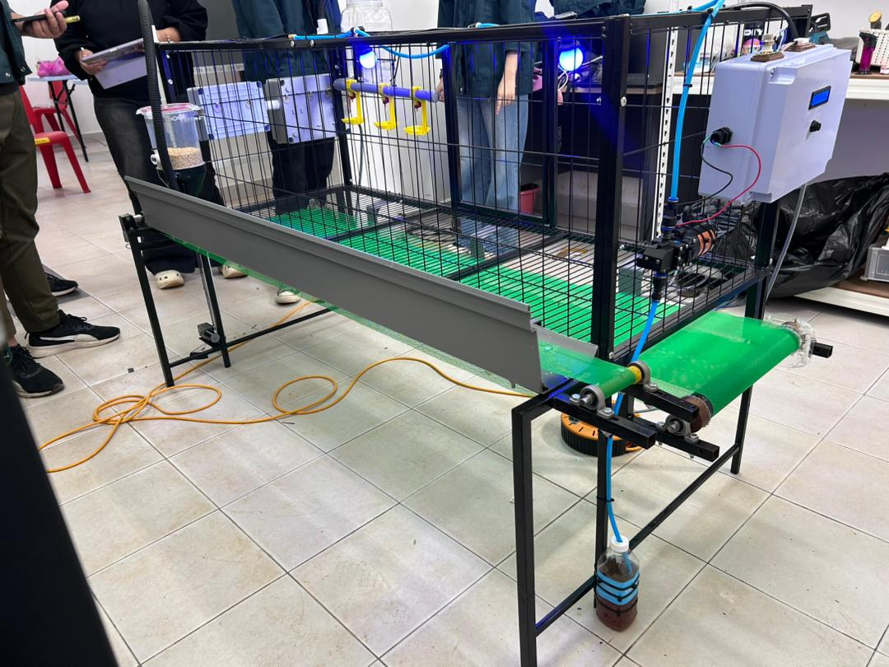

IoT Project
Smart Chicken Coop Monitoring System
An IoT-based system designed to monitor temperature and ammonia levels in a chicken coop. It uses sensors and automated controls to improve the coop environment.
My Role
System development, sensor integration and programming.
Tools Used
ESP32, DHT22, MQ-137, Relay Module and Blynk.
Outcome
Developed an automated monitoring concept with temperature control and misting functions.